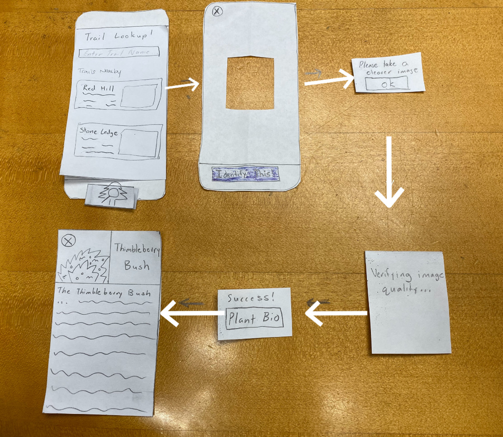
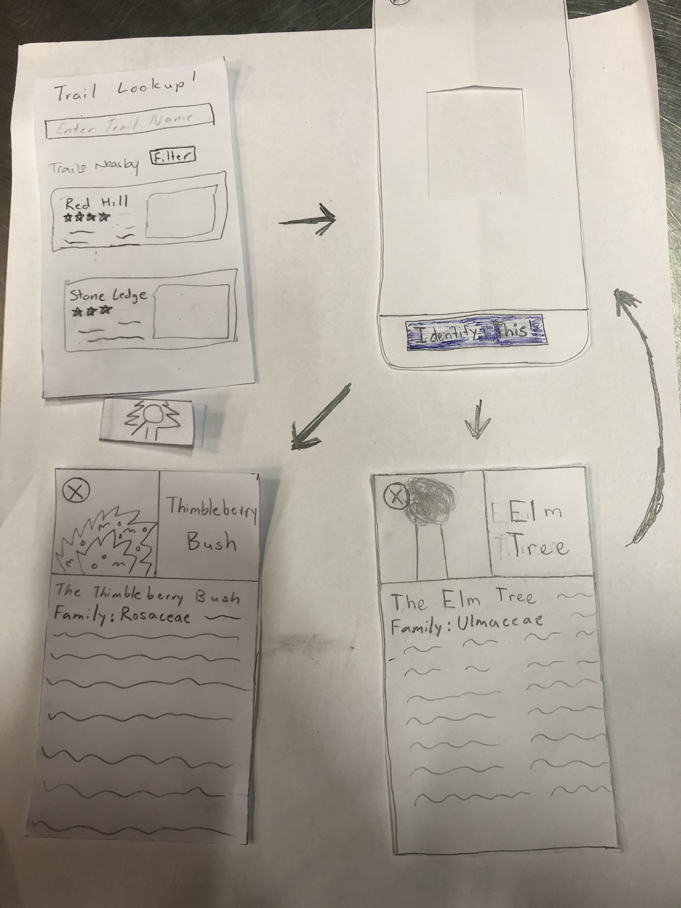
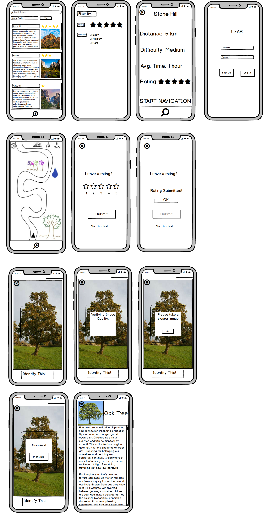
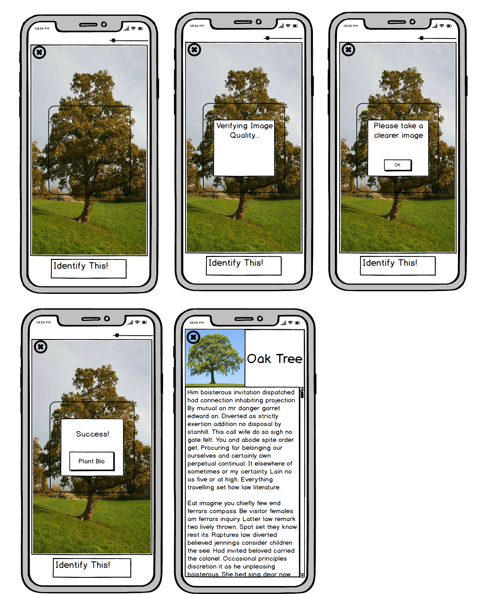

Team
Gaurnett Flowers: Designer & Researcher Eric Wang: Designer & Researcher Rudy Crisostomo: Designer & Researcher
Problem and Solution Overview:
People are born adventurers: trailblazing through the woods, trekking across the desert, ever-climbing to higher places.
Without navigation or certainty of their surroundings however, people cannot accomplish these feats. In fact, the life of a hiker is one that is filled with many inconveniences that negatively impact people’s experiences in the wild. Of these problems, one of the most ubiquitous is the lack of a reliable way to navigate on the trails. This problem affects hikers of all experience levels and often prevents outdoor enthusiasts from exploring and going out on new trails for fear of getting lost on an unfamiliar path1. Another issue is the inability to have questions about local wildlife answered when out in the wild alone. This inhibits the level of interaction that people have with their environment while out on the trails. Thus, we set out to design a better hiking experience for all to improve their time in nature.
Initial Paper Prototype

After performing various UX research practices (more here), we have narrowed down our design to supporting two user tasks. These two tasks include navigating through a desired trail and identifying a piece of wildlife. From our research, we have decided that a mobile app would be the best medium for our design. Our initial paper prototype reflects these decisions and goals.
The design begins with a log-in screen (not entirely necessary). After logging in, the user would be taken to the home screen which would present them with a list of nearby hikes and a search function. At the bottom of the screen are two icons, one representing the navigation mode and the other representing the identification mode. If a user selects a trail, they will be taken to a trail info screen where they can begin navigation. Otherwise, the user can switch to identification mode where they will be taken to a camera screen where they can take photos to identify wildlife around them.
Below are several images that take you through the screens for each task on the initial prototype.
Initial Paper Prototype Task One: Navigation

For this task, we envisioned the user starting on a screen with the summary of the hike. This screen would include the distance of the hike, the difficulty of the hike and the average time that the hike will take. After clicking the start button, it then proceeds to the navigation screen where the user can see the map and directions. The navigation gives the user a detailed scene of the environment they are currently in such as showing tree, water and rivers around them. It navigates the user safely to their destination.
Initial Paper Prototype Task Two: Identification

At any point throughout the first task, the user can tap on the identification button which would take them to the camera page. Here, they can scan their surroundings for wildlife to identify. After a picture is taken and the wildlife is identified, a bio page comes up. This page includes a picture, the name of the flora or faune being identified and a description of the identified object.
More on our initial paper prototype here
Testing Process
For our usability tests, we kept the location consistent and conducted each of them in Eco Cafe during the evening when the area has relatively low foot traffic. We did this because the area was considered to be one that was familiar and comfortable for our participants. We reached out to a diverse group of students in terms of hiking experience to try and get diverse opinions on our design. Thus, our three usability tests were conducted with an intermediate hiker, beginner hiker, and expert hiker in order from our first test to our last. Below are the tasks we gave for each test and some of the specifics on the process for each test.
Usability Test 1
Task 1: Begin and finish a navigation for Stone Hill

Task 2: Identify and learn about 2 different plant species

Summary
We introduced the project by giving a synopsis of the problem that we are trying to solve as well as who we are trying to serve. This allowed us to give a general overview of the project and give the participant an idea of what we are trying to do. Afterwards we explained the tasks one by one that we would like her to perform. We then observed her as she went through the app and then made notes on issues that came up. One issue was that we did not have a sign up button on the login screen. Another issue we had was when she tried to identify the plant. She tapped the focal box to take the picture instead of tapping the “Identify This” button.
Usability Test 2
Task 1: Pick the shortest nearby hike and leave a rating

Task 2: Identify a plant from the Rosaceae family

Summary
The general process of the test was the same as for the first usability test with us starting by explaining the purpose of the test and the two tasks we wanted the user to perform. The tasks that we gave the user for this test were a bit more specific in that we asked the user to pick the shortest nearby hike and begin navigation for that route and we asked them to identify a wildlife that they observe in their Biology Class. One key difference though was that we aimed to provide a bit less guidance than we did in the first test by encouraging the user to think a little deeper about some of the questions they had rather than answering every question about functionality and what different buttons did.
Usability Test 3
Task 1: Find a hike with a 5 star rating and leave a rating

Task 2: Identify an animal

Summary
Considering the success we had with offering little information to the user as they worked through their assigned tasks, we implemented the same game plan for this test as we did for our second usability test. We explained a bit about our project and how the user’s help would be critical to improving our design as a whole before explaining the two tasks that we wanted them to achieve. This time we asked our user to navigate to a hike based on our recommendation system. We asked them to pick a hike that was rated 5 stars and identify an animal.
Refinement Retrospective
When we refined our process we took what we found unclear during our previous usability tests and changed it so that it would correctly represent what we want our participants to do. For example at first we asked out participant to start a navigation without being too specific. We switched this method up in our tests afterwards so that things are more clear. For example we asked them to start a navigation to a specific hike, a hike that's nearby them or a hike that's rated a specific way.
In terms of design refinement, we made our changes based on feedback and observations we saw during our testing. For example we forgot a sign up button so we decided to add one, we changed the icon so that it is more clear what it represents and we changed a few word choices and functionalty limitations that we observed during testing.
More on the testing process here
Testing Results
Much has been learned from our heuristic evaluations, cognitive walkthrough, and usability testing. Here are tables below that summarizes the issues we have encountered and the revisions we have made in response.
Heuristic Evaluations
| # | Heuristic Broken | Description | Severity | Revision |
|---|---|---|---|---|
| 5 | Error Prevention | Pictures don't have a focal point for plant identification | 1 | Changed identification screen to have a focal point for the camera |
| 3 | Control & Freedom | Back button is not present; hard to navigate back | 1 | Added back buttons |
| 1 | Visibility | Route status doesn't seem to be shown | 1 | Added time/distance indicators on the map |
| 6 | Recognition | Navigate/identify simple but ambigous | 1 | Removed two-modal icons on bottom and replaced with a single identification button/toggle |
| 3 | Control & Freedom | Back button is ambiguous, there is no clear way to return to previous view | 4 | Added back buttons |
| 1 | Visibility | Current screen. Some identification of what the current screen is (i.e. route vs identification) | 3 | Single button mode |
| 1 | Visibility | Wrong identification/Identification Error. Needs to list the chance that the identification is false | 3 | Added potential error indicators and pop-up messages for feedback |
| 10/6 | Help/Recognition | Design's ambiguity makes it difficult to figure out where you are in the view | 2 | Single button mode |
| 4 | Consistency | Search icon is inconsistent with what you're doing (taking a photo) | 2 | Changed the icon to include a tree |
| 5 | Error Prevention | User presses navigation button when already in navigation mode and nothing happens | 2 | Single button mode |
More on heuristic evaluation here
Cognitive Walkthrough
| Issue | Description | Severity | Revision |
|---|---|---|---|
| Visibility | Image/Identification Quality Not Clear | 3 | Changed color feedback system to more binary good/retake picture |
| Conceptual Model | Unclear action to verify image/identification quality | 3 | Changed color feedback system to more binary good/retake picture |
| Labeling/Signifiers | Retaking image option not visible/unclear | 2 | Changed color feedback system to more binary good/retake picture |
| Labeling/Signifiers | Start button for navigation is unclear (just says "start") | 2 | Changed to "start navigation" |
| Visibility | Stopping Navigation has no error message | 3 | Added error prevention message before exiting navigation |
More on cognitive walkthrough here
Usability Testing
| Heuristic Broken | Description | Severity | Revisions |
|---|---|---|---|
| Recognition | No signup button | 4 | We added a sign up button to allow our users to sign up for the app. |
| Control & Freedom | Wanted to click the nearby trails before searching (need to add screens for that) | 1 | |
| Real World Mapping | Clicked the focal point instead of the "take a picture" button | 2 | If the user double taps the focal point then it will take a picture. |
| Recognition | The user was not aware initially that you could scroll through the nearby hikes | 2 | We will add a scroll bar that is visable |
| Control and Freedom | The user had initial issues verifying their rating submission and selecting their rating | 3 | We will add more user feedback to the rating system and labels to clarify the rating system |
| Recognition | We asked our user to pick a hike that was rated 5 stars but there was none nearby that matched his skill level. It seemed as if most of the 5 star rated ones were beginner hikes and they were not ones that will match his recommendations. | 2 | Rather than forcing users to scroll down the list of nearby trails to find one that matches their preferences, we revised our design to include an option that allows the user to filter routes by difficulty to allow users to quickly find routes that meet their preferences |
| Error Prevention | It was pretty hard to identify the animal because it was moving. To get a good picture of the animal, the user will have to hope that it stops moving so that the perfect shot can be captured | 4 | Another revision that came up was the scaling of the identification camera focal point. For object that are larger than the focal square, it would be more efficient if the user can expand the focal point in order to capture the right image of the object they are trying to find. This will allow them to capture bigger pictures and thus get more out of their experience. |
More on usability testing here
Here are some important revisions based on the issues we have encountered.
Important Revisions
A critical issue that was detected during our cognitive walkthrough was the lack of a warning message when quitting navigation. This revision was important because it saves a lot of time and confusion on the part of the user if they accidentally click on the exit button in the corner. If this were to happen during a hike, the user could get lost or frustrated which are both feelings and experiences that hikAR is supposed to address and prevent. While the user could search for the route again and restart routing, the addition of a warning message when the user clicks on the exit button can help prevent that from happening in the first place at minimal cost to the average user.
In our third usability test, we found that the user was unable to quickly find a five-star rated trail that matched their expert skill level. Rather than forcing users to scroll down the list of nearby trails to find one that matches their preferences, we revised our design to include an option that allows the user to filter routes by rating and difficulty to allow users to quickly find routes that meet their preferences

- Another revision that came up was the scaling of the identification camera focal point. For object that are larger than the focal square, it would be more efficient if the user can expand the focal point in order to capture the right image of the object they are trying to find. This will allow them to capture bigger pictures and thus get more out of their experience.

- We have decided to change the image/identification utilities. Now, once a user takes a picture, the app will give feedback on the picture immediately, telling the user to either take the picture again or identifying the plant correctly. This will eliminate the confusion and ambiguity in user action.
Final Prototype Overview

The two primary tasks were identification and navigation. However, for each test that we did, these tasks were specified so that we could get more specific results. So for identification, we would ask the user to identifiy something specific to see if they could get it done. This was the same for navigation. The critical aspects of our design would be the error messages and prevention mechanisms implemented to ensure that the user gets the results they want when they want it. We also ensured that all the text and icons were correctly representing what they were intended to do.
More on our final paper protoype
Digital Mockup

Our digital mockup was created in Balsamiq and is largely consistent with our final paper prototype. Some minor changes were made though as a result of seeing our design in digital form. One decision that we made was to add a scrollbar on the wildlife information page as seeing our design in a slightly higher fidelity caused us to realize that the user would likely need to scroll down for the more comprehensive biographies. Another change made was to move the rating given to each hike to the top of their pictures as this made the most sense space-wise. We also decided to adjust the identification icon to have the tree inside of the magnifying glass rather than outside. All other elements of our paper prototype were able to smoothly transition to digital form.
Task 1: Trail Navigation

After logging in, the user finds themselves at the homescreen, where they can either find trails using the search bar or a combination of the filtering option and nearby trail options. Once the user has selected a trail, they will be brought to the trail info screen where they can see varying key information about the trail. At this point, the user can return to the home screen using the X in the top left corner, or begin navigation by clicking “START NAVIGATION”. Now, let’s say the user has found the trail they are going to hike and begins navigation. From the navigation screen, they can stop navigation by pressing the X again in the top left corner or hike the trail with the guided system until it is over. After the user finishes the hike or quits navigation, a popup screen asking for the user to leave a review will show up. From there the user can either decide to review the hike or not.
Task 2: Identifying wildlife

Our user can start this task at any point before, during, or after their hike. However, let’s assume the user starts from the home screen. To begin identification, the user would click on the identification button at the bottom of their screen. The user would then be taken to the camera where they can adjust the size of the camera focus box using a slider. This allows them to take more precise pictures of large objects like trees or wildlife that might be on the move. When their object is within the frame, they can either press the “Identify This” button or tap their screen twice as a slightly faster and more convenient option. That action brings up a small pop-up informing the user that the app is now checking the quality of the image to ensure accurate identification. If the picture is blurry, the pop-up changes to ask the user to take a better picture. Otherwise, the user receives a pop-up stating that their attempt has succeeded and is given a button to go to the biography of the given object. At any point throughout this process, the user can click on the X button in the upper-left corner to return back to home screen or navigation screen depending on whether active navigation was occurring when the identification button was pressed.
Discussion
We learnt a lot about testing and how testing is essential to the redesigning process and fixing the user experience for those who engage in our app. Throughout our testing, we got to pick up on flaws in our design and reshape them to improve our design in several ways. This differed from the icons and words used on our app to the layout. Some of the layout was altered when starting the digital mockups because things looked better when they were placed in different spaces. This allowed us to change our design to offer a better User Experience.
The process shaped our final design based on the feedback we got from each of our participants. Not only the feedback but the observation we made with how our users interacted with our design. For example when our user tapped the focal point to take a picture we decided to change our design so that double tapping that focal point would take a picutre. We also added different screens and pages in order to fix the issues that we found. Adding error messages also helps to improve the implementation of our app.
Our tasks have changed to become a bit more specific. For example, instead of asking our users to start a navigation to a hike, we would ask them to start a navigation based on their location or based on the reviews placed by other users. This allowed us to find more specific problems with the tasks that users would actually perform on a regular bases.
I think we could have used more iterations upon our design. This would allow us to capture a wider target audience and see how people of different levels and needs interact with our app. It would also allow us to improve our design because the more feedback the better.
Our project has gone a long way in a short time: a great learning experience for future solution-designs and building on this one.
Appendix
Paper Prototype
Heuristic Evaluation
Usability Testing Check-In
Usability Testing Review
Digital Mockup